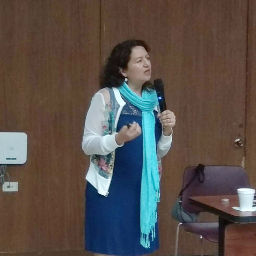

La corrupción desde la visión de las OSC

María del Carmen Nava Polina
Politóloga por el Instituto Tecnológico Autónomo de México; cuenta con especialidad en aplicación teórica y estadística para la creación de modelos teóricos en ciencia política por Washington University in Saint Louis. Ha realizado estudios en el Instituto de Investigaciones Jurídicas de la UNAM, el Instituto Nacional de Administración Pública de España, la Universidad de California en San Diego, el Instituto de Investigación Mental en la Universidad de Palo Alto, California, el Instituto Nacional de Ciencias Penales y la Facultad Latinoamericana de Ciencias Sociales, sede México.
Su enfoque se centra en estudios parlamentarios, partidos políticos, transparencia y rendición de cuentas. Cuenta con veinticinco años de experiencia en investigación. Encabezó la Coordinación de Transparencia y Parlamento Abierto de la Asamblea Constituyente de la Ciudad de México. Ha colaborado en las comisiones de Gobernación, Puntos Constitucionales y Seguridad Pública de la Cámara de Diputados; ha sido asesora del Secretario de Gobernación; del Procurador General de la República y del Senado de la República.
Investigadora en el periódico Reforma, El Colegio de México y el Instituto Tecnológico Autónomo de México. Ha publicado más de 200 textos especializados. Su última publicación es "Towards an open parliament in Mexico: an evaluation experience" en el libro "Open Parliaments, Results and Expectations". Su blog en Animal Político es https://www.animalpolitico.com/blogueros-vision-legislativa
Directora y fundadora de Visión Legislativa, organización que surge en 2009 cuya misión es contribuir al conocimiento a partir de la investigación aplicada, al fortalecimiento de la democracia, transparencia y rendición de cuentas a través de indicadores de desempeño institucional, con énfasis en el Poder Legislativo, partidos políticos, congresos locales y derechos humanos. Forma parte de la Red Latinoamericana de Transparencia Legislativa, de Opening Parliament y de las organizaciones que impulsan el parlamento abierto en México.
Integró el Consejo Editorial Metropolitano del Periódico Reforma (20016 y 2017); del Consejo Técnico Asesor del programa "Cómo Vamos Ciudad de México", desarrollado con el periódico El Universal. Fue especialista en el proyecto de Variedades de Democracia convocado por la Universidad de Gthemburg y el Kellog Institute de la Universidad de Notre Dame, en las áreas de Poder Legislativo, Poder Ejecutivo, Partidos Políticos y Discurso (2014). Así como especialista en la elaboración de indicadores, lineamientos, criterios para publicación y evaluación de información pública de oficio de los partidos políticos, agrupaciones políticas nacionales y candidaturas independientes, con el Instituto Nacional de Transparencia, Acceso a la Información y Protección de Datos Personales (2015).
Ha participado en foros como: Jornadas Académicas de Gobierno Abierto de OGP (2017), Reunión Regional de las Américas de Open Government Partnership (2017), gobierno abierto en la Ciudad de México (2017), seminario internacional de transparencia legislativa en el Senado y Cámara de Diputados (2016), mesa de parlamento abierto, resultados y expectativas en Open Government Partnership 2015 (octubre 2015); la Semana de Transparencia y Parlamento Abierto en el Senado de la República (marzo 2014). En talleres sobre parlamento abierto como herramienta anticorrupción para Coparmex (2017); “Promoviendo la Transparencia Legislativa desde la Ciudadanía” en el Senado de la República, organizado por el National Democratic Institute (abril 2015).
También en mesas públicas de discusión sobre parlamento y gobierno abiertos en el gobierno de Puebla, en el Congreso del Estado de Tlaxcala, en el Instituto Nacional de Transparencia, Acceso a la Información y Protección de Datos Personales (INAI), en la Asamblea Legislativa del Distrito Federal y el Senado; en grupos de trabajo sobre estudios parlamentarios en la Universidad Iberoamericana y en el Instituto de Investigaciones Jurídicas de la UNAM, en el Centro Mexicano para la Filantropía (CEMEFI).
Ha impartido cursos sobre: proceso legislativo, derecho parlamentario, órganos de gobierno en el Poder Legislativo, sistema de comisiones legislativas, sistema político contemporáneo en México, combate a la corrupción, derechos humanos, prevención del delito, parlamento abierto, gobierno abierto, administración pública, prevención de riesgos, rendición de cuentas, representación, transparencia y acceso a la información.
Ha sido jurado de concursos nacionales en temas de parlamento abierto y acceso a la información pública.